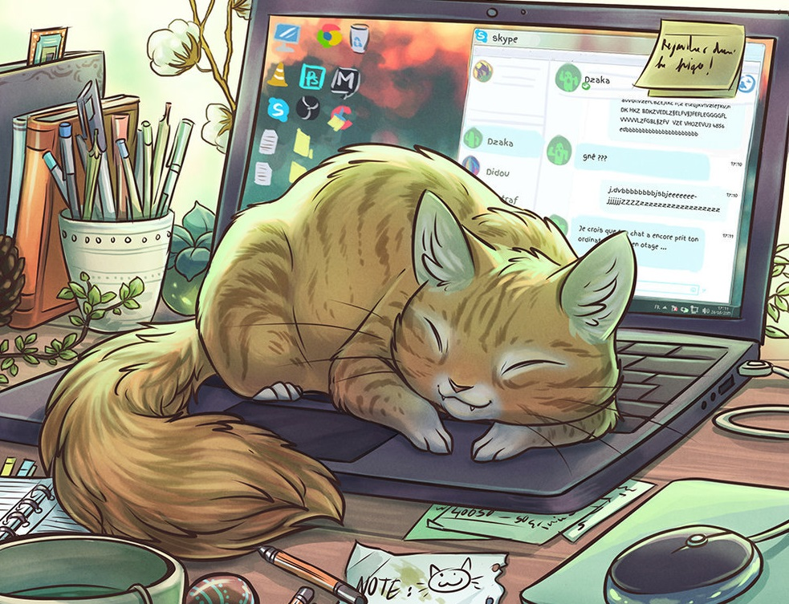
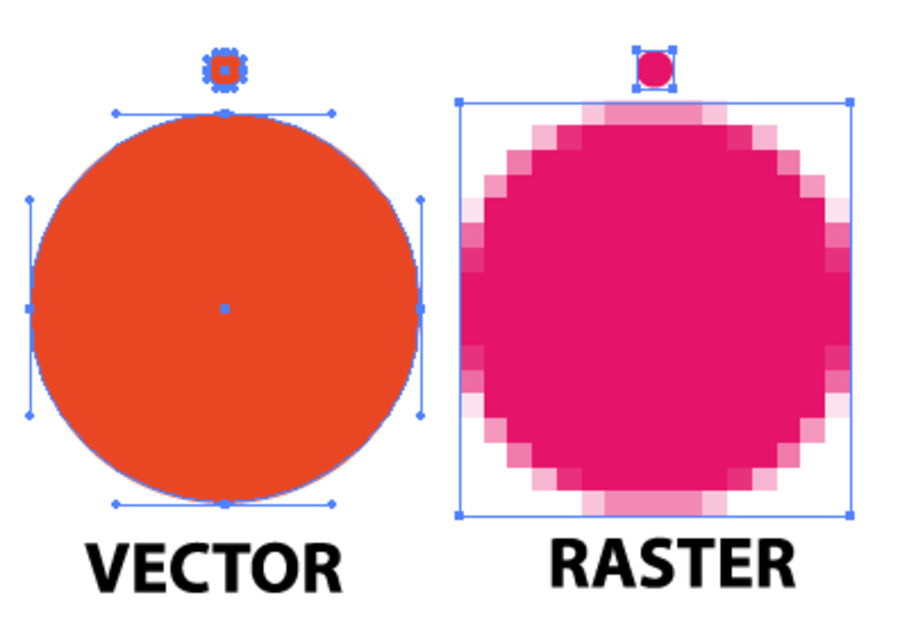
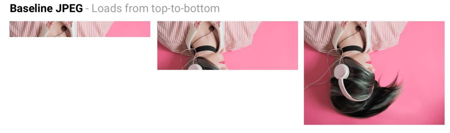
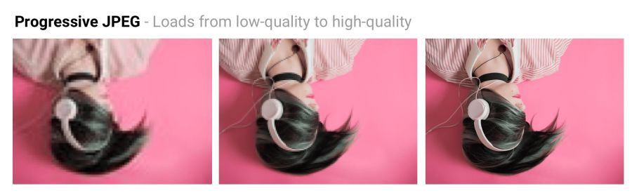
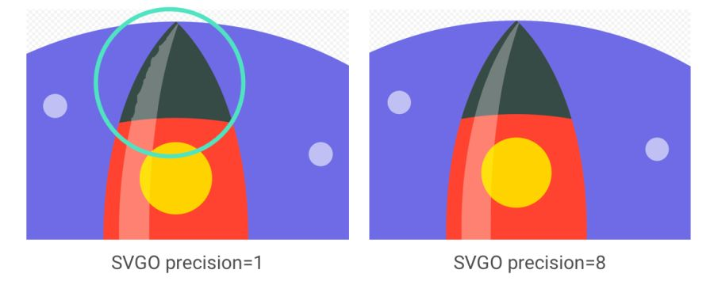

Оптимизация графики для веба: самое важное
Графика остаётся главной причиной ожирения веб-страниц
Изображения составляют огромную долю интернет-трафика. Согласно HTTP Archive, 60% объёма веб-страниц — это графика в форматах JPEG, PNG и GIF. По состоянию на июль 2017 года изображения составляли 1,7 МБ на средней веб-странице объёмом 3,0 МБ. Эксперимент Тэмми Эвертса доказал, что добавление изображений на страницу или увеличение существующих изображений повышает коэффициент конверсии (процент посетителей, которые становятся клиентами — прим. пер.). Так что картинки никуда не денутся — вот почему важно вложиться в эффективную стратегию по их сжатию.
Как выбрать формат?
Как отметил Илья Григорик в своём превосходном руководстве по оптимизации изображений, «правильный формат» сочетает в себе желаемый визуальный результат и функциональные требования. У вас растровая или векторная графика?
Растровая графика кодирует значения каждого пикселя на прямоугольной сетке пикселей. Они не зависят от разрешения или масштаба. С такой графикой хорошо справляются WebP или широко поддерживаемые форматы, такие как JPEG или PNG. Растровая графика используется там, где нужен фотореализм. Guetzli, MozJPEG и другие упомянутые инструменты подходят для растровой графики. Векторная графика применяет точки, прямые и полигоны для представления изображений с простыми геометрическими фигурами (например, логотипов). Она предлагает высокое разрешение и масштабирование. Для такого варианта лучше подходят форматы вроде SVG. Выбор неправильного формата дорого вам обойдётся. Менять формат следует с осторожностью, проведя эксперименты с возможной экономией в разных форматах.
Скромный JPEG
Вероятно, JPEG — самый популярный в мире формат графики. Как отмечалось ранее, 45% изображений на сайтах в HTTP Archive — это картинки JPEG. Ваш телефон, цифровая камера, старая веб-камера — все они обычно поддерживают данный кодек. Он очень древний, используется аж с 1992 года. За это время проведено огромное количество исследований, как улучшить компрессию JPEG. JPEG — алгоритм сжатия с потерями, который отбрасывает «лишнюю» информацию для экономии места. Задача состоит в максимальном сохранении визуальной точности с минимизацией размеров файлов.
Форматы вроде JPEG лучше всего подходят для фотографий или изображений с большим количеством цветов. Большинство инструментов оптимизации позволит выбрать приемлемый уровень сжатия: более сильное сжатие уменьшает размер файлов, но может привнести артефакты: гало или блочность.
Примеры JPEG-изображений

Режимы сжатия JPEG
В формате JPEG есть ряд различных режимов сжатия. Три популярных: базовый (последовательный), прогрессивный JPEG (PJPEG) и сжатие без потерь.
Чем отличаются базовый (или последовательный) и прогрессивный JPEG?
Базовый JPEG (режим по умолчанию в большинстве редакторов и оптимизаторов) кодирует и декодирует относительно просто: сверху вниз. Когда базовый JPEG загружается по медленному или нестабильному соединению, пользователь сначала увидит верхнюю часть картинки. Режим сжатия JPEG без потерь похож на базовый, только с меньшей степенью сжатия.
Прогрессивный JPEG делит изображение на ряд проходов. Первый проход показывает картинку в размытом виде и низком качестве, а последующие проходы постепенно улучшают качество. Каждый проход повышает уровень детализации. В конце концов создаётся полноценное изображение.
Оптимизация SVG
Минимизировать файлы SVG — значит удалить всё лишнее. Как правило, SVG из редактора содержит много избыточной информации (метаданные, комментарии, скрытые слои и так далее). Зачастую её можно безопасно удалить или свести к минимуму, не влияя на визуальный результат.
Некоторые общие правила оптимизации SVG
- Минифицируйте файлы SVG и сжимайте в gzip, ведь SVG — это просто текстовые ресурсы на XML, такие как CSS, HTML и JavaScript. Для повышения производительности их следует минимизировать и сжать.
- Вместо путей используйте стандартные формы SVG, такие как <rect>, <circle>, <ellipse>, <line> и <polygon>. Это уменьшит объём необходимой разметки и объём кода для парсинга и растеризации в браузере.
- Если необходимо использовать пути, попробуйте уменьшить их. Упростите и объедините кривые и пути, где возможно. Инструмент simplify в Illustrator хорошо удаляет лишние точки даже в сложных работах, сглаживая неровности.
- Избегайте групп. Если не можете, попробуйте упростить их.
- Удалите невидимые слои.
- Избегайте эффектов Photoshop и Illustrator. Они могут сконвертироваться в большие растровые изображения.
- Внимательно проверьте наличие встроенных растровых изображений, которые не подходят для SVG.
- Используйте инструмент для оптимизации SVG, здесь незаменим веб-интерфейс SVGOMG для SVGO. Если используете Sketch, то отличный плагин Sketch для SVGO уменьшает размер файла при экспорте.
SVGO — инструмент оптимизации SVG на Node. Он уменьшает размер файла, понижая точность чисел в definitions. Каждая цифра после точки — лишний байт, поэтому изменение точности (количества цифр) сильно влияет на размер файла. Но будьте очень осторожны, потому что снижение точности может визуально повлиять на формы изображения.
SVG-спрайты
SVG отлично подходит для иконок, предлагая визуализацию в виде спрайта без изворотливых обходных путей, необходимых для шрифтов. У него лучший контроль стилей CSS, чем в шрифтах (свойства SVG stroke), лучший контроль позиционирования (нет необходимости заморачиваться с псевдоэлементами и display) и SVG гораздо лучше поддерживается в браузерах.
Избегайте пережатия графики с потерей качества
Сжимать изображение всегда рекомендуется из исходника. Повторное пережатие чревато неприятными последствиями. Предположим, вы берете JPEG, который уже сжат с качеством 60. Если повторно сжать его с потерями, он будет выглядеть хуже. Каждый дополнительный раунд сжатия приведёт к дополнительной потере качества — информация удаляется, а артефакты накапливаются. Даже если вы пережимаете с установками высокого качества.
Чтобы избежать этой ловушки, сразу установите минимально приемлемое качество, и получите максимальную экономию с самого начала. Затем вы не пойдёте на повторное пережатие, потому что любое сжатие файла с потерями будет выглядеть плохо, хотя и уменьшит размер файла.
Отзывчивые изображения
Использование отзывчивых изображений в дизайне становится все более популярным: оно позволяет показывать изображения разного масштаба в зависимости от разрешения дисплея, на котором выводится сайт. При этом научиться использовать отзывчивые изображения в дизайне своего сайта несложно, вам необходимо знать только html-разметку.